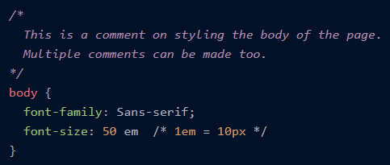

Enquanto o HTML atua na estrutura de uma página web, o CSS ou Cascading Style Sheets entra em ação na estilização do site, é uma linguagem usada para descrever a apresentação de páginas da web, que inclui o layout da página, fontes de elementos e cores, animação e muito mais. Tornando assim nossa página web bonita para o usuário.
CSS é projetado para fazer folhas de estilo para páginas da web. É independente, ou seja, pode ser usado com qualquer linguagem de marcação baseada em XML.
A função do Seletor é selecionar o elemento que você deseja segmentar. Alguns dos seletores básicos são tags , id's e classes. A sintaxe do css forma um par chave-valor, onde chave: propriedade . O que inclui plano de fundo, cor, tamanho da fonte , etc. E o valor é o valor atribuído às propriedades.
Na programação, um comentário é uma explicação legível de um código. A importância do comentário é tornar o código-fonte mais fácil de ser interpretado pelos humanos.
As linhas dentro de /* e */ são CSS , e isso ajuda a escrever um monte de linhas explicando o código que não será executado. Assim, os comentários em CSS permitem que alguém leia o CSS para entender o motivo por trás da linha específica do CSS .
Os seletores em CSS são usados para selecionar o conteúdo específico que você deseja estilizar. Em CSS existem vários tipos de seletores utilizados para seleção HTML , tais como:
O sinal de asterisco ( * ) é usado para definir seletores universais. É usado para selecionar todo o conteúdo de uma HTML .
O Seletor de ID é o operador mais comumente usado, que é usado para definir o estilo para o ID fornecido. O atributo Id é um valor de atributo exclusivo em HTML. Denotamos seletor de id por ( # ) .
Os seletores de classe selecionam o elemento com um atributo de classe especificado. Para selecionar o elemento de uma determinada classe, usamos ( . ) seguido do nome da classe.
Existem, no total, três maneiras de inserir CSS em uma página HTML. As maneiras são:
É uma maneira de adicionar um estilo único a um elemento específico. Para usar Estilos embutidos, você pode adicionar o atributo style na tag HTML e, em seguida, dentro do atributo style, você pode fornecer estilos diferentes.
O CSS interno é usado em um único HTML. Para inserir o CSS, colocamos todo o CSS dentro da tag head do HTML usando a tag <'style'>.
Conforme discutido acima, com a ajuda de CSS externo , usamos o mesmo CSS repetidas vezes. A maneira como fazemos isso é criando um CSS e vinculando-o ao HTML dentro da tag <'head'> usando um <'link'>.
A propriedade border permite especificar como ficará a borda ao redor do elemento. Há um total de três propriedades da borda que podemos alterar:
A propriedade Border Color nos permite alterar a cor da borda ao redor do elemento.
A propriedade border-style ajuda você em diferentes estilos para a borda ao redor do elemento, como none (sem borda) e solid (linha única sólida).
Uma página da Web pode ser dividida em diferentes contêineres para projetar cada elemento separadamente. O box model é usado como um kit de ferramentas para estilizar o layout de diferentes elementos. As propriedades usadas pelo modelo de caixa CSS para estilizar e projetar layouts da web são:
Área de margem Esta área consiste na borda e na margem do elemento, a dimensão da caixa de margem é definida usando a propriedade margin-box height e margin-box width. O uso da área de margem é para separar os elementos de seus vizinhos.
Área de Fronteira Esta é a área entre a margem e o preenchimento da caixa . As dimensões da área de borda são definidas usando a largura e a altura da borda.
Área de Preenchimento Esta área inclui o preenchimento fornecido ao elemento, que é o espaço ao redor do elemento, da área de preenchimento pode ser definida usando a largura da caixa de preenchimento e a altura da caixa de preenchimento.
Área de conteudo Esta área consiste em imagens , texto ou outros tipos de conteúdo de mídia . A área de conteúdo é delimitada por uma borda de conteúdo e sua dimensão é definida usando da caixa de conteúdo e largura .